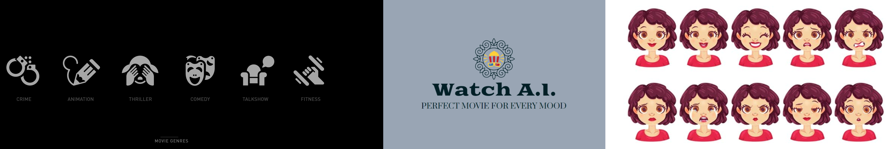

Emotion Based Movie Recommendation App
January 2023 - April 2023
Arizona State University, Tempe, Arizona
MFG_Project_Main_Code.py file and refer to the video link below for guidance before running the code.MFG_Project_Main_Code.py file runs two Python files as applications.MFG598_Emotion_Detection.py code opens as app1, which captures an image of your current emotional state and saves it as a photo.png file.ferNet.h5 model, which uses KNN to predict emotion by comparing the facial photos in the train folder.ferNet.h5 model is a well-known model trained from FER2013 (Facial Expression Recognition 2013 Dataset).emotion_out.txt file.emotion_out.txt file, the second code, MFG598_Movie_Recommend_Emotion_Based.py, is opened as app2.emotion.csv file and display the movie recommendation for the current emotion. If the user doesn't like the recommended movie, they can click the next button, which will recommend another movie a thousand times.selected_movie.txt.tmdb_5000_credits.csv and tmdb_5000_movies.csv files.MFG598_Movie_Recommend_Content_Based.py app, the code first prompts the user to enter the movie name (case-sensitive). Based on the information provided, the app uses a TfidfVectorizer to convert the movie overviews into vectors and calculates the cosine similarity between them.tmdb_5000_movies.csv, the app will prompt the user to input a different movie.Conclusion
Our project combines emotion detection and movie recommendations to offer a unique and personalized entertainment experience. Through facial expression analysis using the FER2013 dataset and ferNet.h5 model, we accurately predict emotions and recommend movies that resonate with the user's feelings. Additionally, our content-based movie recommendation system utilizes natural language processing to suggest films based on plot and content, providing a holistic approach to movie recommendations. Our project showcases the power of machine learning and data-driven solutions in enhancing everyday entertainment choices, aiming to offer users an immersive and tailored movie-watching experience.
Check out the project here GitHub for dataset, code and more.